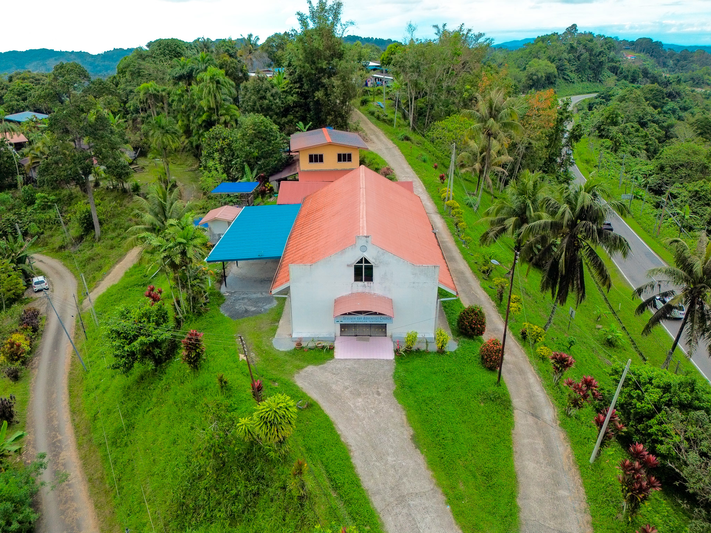

“Aku bersukacita, ketika dikatakan orang kepadaku: ‘Mari kita pergi ke rumah TUHAN.” — Mazmur 122:1
Bacaan: Kitab Kejadian
Masa: 2.00 Petang
Masa: 7.30 Pagi
RM10 sebulan / keluarga
Sabat Ke-9 | 28 Februari 2026